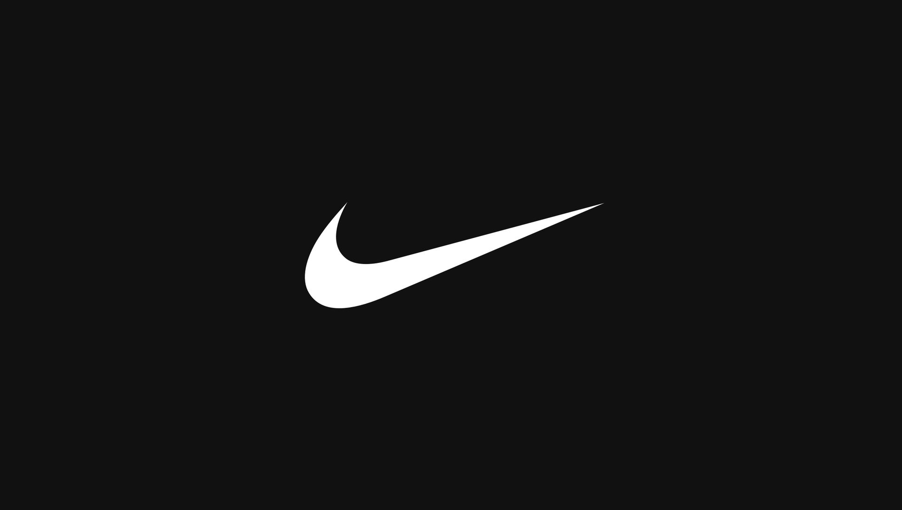

O Impacto Cultural na Moda e no Esporte
A rivalidade entre a Nike e a Adidas ultrapassa décadas e vai muito além dos limites dos campos de futebol e das quadras de basquete. Trata-se de uma verdadeira batalha pelo topo do mercado global de vestuário, influenciando diretamente a cultura pop, o hip-hop, o cinema e o estilo urbano conhecido mundialmente como streetwear. Ao longo de mais de meio século, essas duas potências mundiais transformaram simples tênis de corrida e chuteiras esportivas em verdadeiros objetos de desejo, símbolos de status social e peças essenciais de expressão pessoal.
Enquanto a Adidas construiu sua imagem com base na tradição e no desempenho técnico europeu desde meados do século XX, a Nike surgiu no cenário norte-americano nos anos 1960 desafiando os padrões estabelecidos com campanhas publicitárias extremamente ousadas, design futurista e parcerias milionárias com grandes atletas. Hoje, essa competição constante serve como o principal combustível para a inovação no setor esportivo, fazendo com que ambas tentem superar uma à outra a cada novo lançamento tecnológico.

Nike: A Gigante do Swoosh
A história da Nike teve início em 1964 nos Estados Unidos, quando o atleta Phil Knight e seu treinador de atletismo, Bill Bowerman, fundaram a distribuidora Blue Ribbon Sports para importar tênis esportivos do Japão. Em 1971, a empresa passou por uma reformulação completa e adotou oficialmente o nome Nike, inspirado diretamente na deusa grega da vitória. No mesmo ano, foi criado o icônico logotipo Swoosh por uma estudante de design por apenas 35 dólares, símbolo que hoje representa velocidade, movimento e superação em qualquer lugar do planeta.
O ponto de virada definitivo na história da marca aconteceu em 1984, quando a Nike assinou um contrato histórico com o jovem calouro do basquete Michael Jordan. A criação da linha Air Jordan revolucionou para sempre o marketing esportivo e deu origem à cultura global dos sneakerheads — colecionadores de tênis raros. Além do basquete, a marca consolidou sua hegemonia no futebol mundial ao patrocinar seleções lendárias como a do Brasil, além de investir pesado em campanhas com o famoso slogan "Just Do It", incentivando atletas amadores e profissionais a superarem seus próprios limites cotidianos.

Adidas: O Império das Três Listras
A Adidas nasceu na Alemanha na década de 1920, fruto da paixão de Adolf "Adi" Dassler por calçados esportivos, desenvolvidos inicialmente na lavanderia de sua própria mãe. Após o fim de uma sociedade e uma briga familiar histórica com seu irmão Rudolf (que viria a fundar a rival Puma), Adi registrou oficialmente a Adidas em 1949. A marca ganhou projeção internacional astronômica durante a Copa do Mundo de 1954, quando a seleção alemã sagrou-se campeã utilizando as inovadoras chuteiras com travas rosqueáveis criadas por Adi para adaptar-se ao gramado molhado.
Além do esporte de alta performance, a Adidas desempenhou um papel fundamental na construção do estilo de rua. Nos anos 1980, o trio pioneiro de hip-hop Run-D.M.C. imortalizou o clássico tênis Superstar ao lançar a canção "My Adidas", selando o primeiro grande contrato entre uma marca esportiva e um grupo musical. Com linhas atemporais como o Stan Smith, o Gazelle e a recente febre do modelo Samba, a Adidas consegue conectar perfeitamente a sua rica herança histórica às tendências de moda mais desejadas pela juventude atual.
Sustentabilidade e Tecnologias do Futuro
Na atualidade, o foco da batalha entre Nike e Adidas migrou para as arenas da sustentabilidade ambiental e da alta tecnologia aplicada à performance humana. Com o avanço das discussões sobre mudanças climáticas, ambas as empresas investem bilhões de dólares em pesquisa para transformar processos produtivos poluentes em sistemas circulares e ecológicos, sem perder a qualidade técnica exigida pelos atletas olímpicos.
A Nike lidera essa transição através do programa global Move to Zero, reutilizando garrafas plásticas descartadas e sobras de tecidos de fábrica para a confecção de fios sustentáveis e espumas de amortecimento. Por sua vez, a Adidas firmou uma parceria pioneira com a organização Parley for the Oceans, recolhendo resíduos plásticos em ilhas e praias distantes para transformá-los no tecido de alta performance Primeblue, utilizado em camisas de futebol oficiais e tênis da linha de corrida UltraBoost.